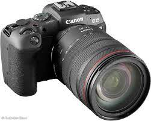

Long Beach Grad Prix 2023
My interests for photography began my freshman year of high school when I got my first DSLR as a gift. It was a Canon Rebel T6. A few years later I upgraded to a Canon EOS RP, a mirrorless body, which is my current camera. I treat photography purely as a hobby, as what makes photography fun for me is the freedom to take pictures of whatever I want.
Here are a few of my favorite photos I have taken with this camera


I also just recently got a drone to further my interests in photography.
My drone UAS is a DJI Air-2s, and I
am currently working towards my have received my Part-107 License
from the FAA to be able to pilot commerically if I ever want to.
Here are a few of my favorite drone photos